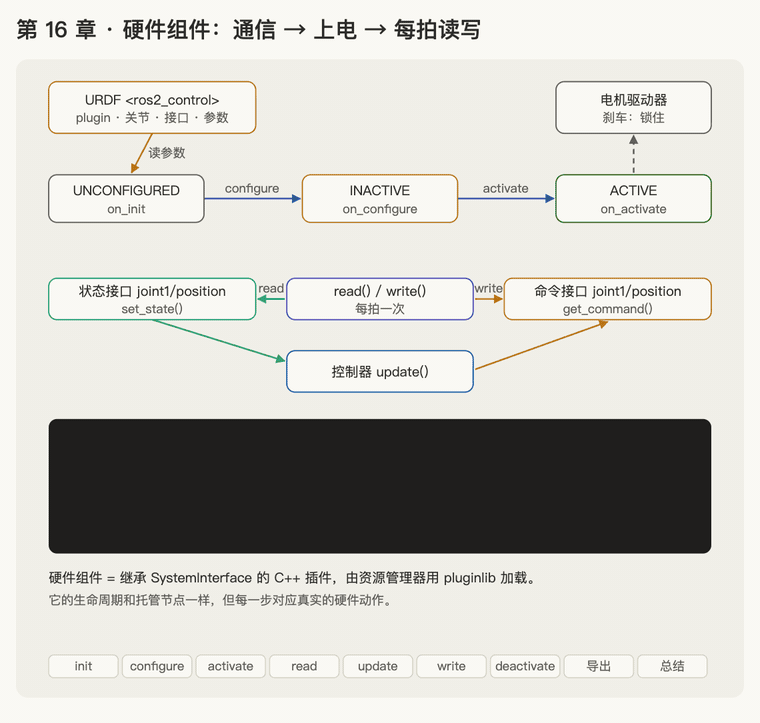

第 16 章 · 硬件组件与控制器
本地运行
git clone https://github.com/wikieden/ros2-from-scratch
cd ros2-from-scratch/code/notebooks
pip install jupyterlab torch numpy
jupyter lab ch16_hardware_jtc.ipynb也可以下载后直接用 VS Code 打开 .ipynb 运行。需要 GPU 的章节在 Colab 里选「代码执行程序 → 更改运行时类型 → GPU」。
本章回答：要让 ros2_control 驱动自己的电机，硬件组件要实现哪些函数？上电、松刹车该写在哪？最常用的标准控制器（关节轨迹、差速底盘、关节状态广播）怎么用？自己写控制器要遵守什么？
讲解日期：2026-11-13 · 上一章：第 15 章 实时与 ros2_control 架构 · 下一章：第 17 章 Nav2
对应原文：ecosystem/ros2_control/hardware_interface/doc/writing_new_hardware_component.rst、lifecycle_of_a_hardware_component.rst；ecosystem/ros2_controllers/joint_trajectory_controller/doc/userdoc.rst；ecosystem/ros2_controllers/doc/writing_new_controller.rst（路径相对ros2/materials/）
对应 study-plan 阶段 F3–F5，动手里程碑 R-M7（给自己的 2 连杆臂配 mock 硬件 + 轨迹控制器，再写一个自己的SystemInterface）。
本章缩写：JTC = Joint Trajectory Controller（关节 / 轨迹 / 控制器）；PID = Proportional-Integral-Derivative（比例 / 积分 / 微分）；C0 / C2（位置连续 / 二阶导数连续：轨迹的平滑程度）；hpp/cpp（C++ 头文件 / 源文件后缀）；DC = Direct Current（直流）。全部缩写见 附录 · 缩写与术语表
本章先看总图，再分 3 步：
| 步 | 内容 | 状态 |
|---|---|---|
| 0 | 总图：一个硬件组件从加载到干活的全过程 | ✅ |
| 1 | 写硬件组件：要实现的函数、生命周期每一步干什么 | ✅ |
| 2 | 标准控制器：关节轨迹控制器、差速底盘控制器、广播器 | ✅ |
| 3 | 写控制器：接口声明、实时的 update()、级联 |
✅ |
讲解
总图 · 硬件组件的一生

可交互版：animations/16-hardware-lifecycle.html（内置浏览器：http://localhost:8340/16-hardware-lifecycle.html）。
硬件组件也是一个托管对象，生命周期和第 11 章完全一样：UNCONFIGURED → INACTIVE → ACTIVE，还有 FINALIZED。区别是每一步对应真实的硬件动作：建立通信、上电、松刹车。
第 1 步 · 写一个硬件组件
依据：materials/ecosystem/ros2_control/hardware_interface/doc/writing_new_hardware_component.rst（下称"硬件组件指南"）、lifecycle_of_a_hardware_component.rst（下称"硬件生命周期"）。
它是一个 C++ 插件：ament_cmake 包里一个类，继承 hardware_interface::SystemInterface（或 ActuatorInterface、SensorInterface），由控制器管理器用 pluginlib 动态加载（硬件组件指南开头）。
要实现的函数和各自该做的事（硬件组件指南第 4 步；硬件生命周期）：
| 函数 | 之后的状态 | 该做什么 |
|---|---|---|
on_init(info) |
UNCONFIGURED | 先调父类 on_init；读 URDF <ros2_control> 里的参数（info）、检查关节和接口是否齐全；初始化成员变量。还不和硬件通信 |
on_configure |
INACTIVE | 建立通信：打开串口 / 连上 EtherCAT 主站；之后可以读状态 |
on_activate |
ACTIVE | 上电："功率电路打开、硬件可以动了，比如刹车松开"；命令接口开始生效 |
read(time, period) |
— | 每拍从硬件读状态，set_state("joint1/position", 值) |
write(time, period) |
— | 每拍取命令 get_command("joint1/position")，发给硬件 |
on_deactivate |
INACTIVE | 与 activate 相反：断功率、上刹车 |
on_cleanup |
UNCONFIGURED | 与 configure 相反：断开通信 |
on_shutdown / on_error |
FINALIZED / 处理错误 | 收尾 / 错误处理 |
返回值 CallbackReturn::SUCCESS / FAILURE（转换失败）/ ERROR（严重错误，进 on_error）（硬件生命周期）。
接口不用自己创建了：框架根据 URDF <ros2_control> 标签里列的接口自动导出状态接口和命令接口，名字是 <关节名>/<接口类型>，你在 read / write 里按名字读写即可（硬件组件指南"Command-/StateInterfaces are now created and exported automatically"一条）。
导出插件（硬件组件指南第 5–7 步）：文件末尾加 PLUGINLIB_EXPORT_CLASS(my_pkg::MyHardware, hardware_interface::SystemInterface)；写一个插件描述 my_pkg.xml；CMake 里 pluginlib_export_plugin_description_file(hardware_interface my_pkg.xml)。之后 URDF 里 <plugin>my_pkg/MyHardware</plugin> 就能找到它。
read / write 是实时回路的一部分：第 15 章的规矩全部适用。和硬件通信本身可能很慢（比如串口），常见做法是另开一个通信线程，read / write 只和它交换最新值；控制器管理器也支持把某个硬件组件设成异步更新（async_updates.rst）。
想发诊断信息怎么办？ 不要在 read / write 里直接发布话题。硬件组件指南给了三种实时安全的办法：框架管理的状态发布器（推荐）、框架为每个组件建好的节点（get_node()，在 on_configure 里建发布者和定时器）、或从 on_init 参数拿到 executor 自己加节点。
mock 硬件：mock_components/GenericSystem 把命令原样当成状态返回（可选加一阶延迟），不需要任何硬件就能把控制器、上层全跑通（mock_components_userdoc.rst）。
第 2 步 · 标准控制器
依据：materials/ecosystem/ros2_controllers/ 各控制器目录的 doc/userdoc.rst。
关节轨迹控制器 JTC（joint_trajectory_controller/doc/userdoc.rst）：机械臂最常用。
- 输入：一条关节空间轨迹：一串路点，每个路点有到达时刻、各关节位置（可选速度、加速度）。路点之间可以隔得很远，控制器按时间插值，每拍算出当前该到的位置；只有一个路点的轨迹也接受。
- 两个入口：话题
<控制器名>/joint_trajectory（trajectory_msgs/msg/JointTrajectory，发了就执行，无反馈）和动作<控制器名>/follow_joint_trajectory（control_msgs/action/FollowJointTrajectory，有反馈和结果，MoveIt 用这个）。 - 新轨迹来时会替换正在执行的轨迹；通过动作发来的新目标会让旧目标被 abort（第 6 章的动作语义）。2026 年起替换默认是"融合"：保留旧轨迹到交接点的部分，再平滑接上新路点（参数
allow_trajectory_replacement）；只有位置的路点可开positions_upsampling补出平滑的速度（详见第 20 章、control.ros.org/doc/resources/gsoc2026_physical_ai.rst）。 - 命令接口可以是
position、velocity、effort等组合：位置接口直接转发；速度或力矩接口时，用 PID 把"轨迹跟踪误差"变成速度 / 力矩命令（需配置 PID 增益）。 - 其他特性：实时安全实现；正确处理连续关节的角度绕圈；系统时钟跳变不影响已排队的轨迹；取消时可平滑减速停下。
最小配置：
controller_manager:
ros__parameters:
joint_trajectory_controller:
type: "joint_trajectory_controller/JointTrajectoryController"
joint_trajectory_controller:
ros__parameters:
joints: [joint1, joint2]
command_interfaces: [position]
state_interfaces: [position, velocity]
差速底盘控制器（diff_drive_controller/doc/userdoc.rst）：订阅 ~/cmd_vel（geometry_msgs/msg/TwistStamped），按轮距、轮径算出左右轮速度，写进轮子的速度命令接口；同时用轮子的状态算里程计，发布 ~/odom（nav_msgs/msg/Odometry），可选发布 odom → base_link 的 tf（第 12 章 REP 105 里"里程计负责的那一段"）。注意它要的是带时间戳的 TwistStamped，第 2 章 turtlesim 用的是不带时间戳的 Twist。
其他常用的（ros2_controllers/doc/controllers_index.rst）：
| 控制器 | 用途 |
|---|---|
joint_state_broadcaster |
把所有状态接口发布成 /joint_states（几乎每个系统都要） |
forward_command_controller（位置 / 速度 / 力矩版） |
话题收到一组数，原样写进命令接口：最简单，适合学习型策略直接输出关节目标 |
admittance_controller |
导纳控制：根据力传感器读数让末端"顺从"外力 |
pid_controller |
通用 PID，可做级联中的一环 |
imu_sensor_broadcaster、force_torque_sensor_broadcaster |
把传感器状态接口发布成话题 |
parallel_gripper_controller |
平行夹爪 |
mecanum_drive_controller、ackermann_steering_controller 等 |
其他底盘构型 |
第 3 步 · 写控制器
依据：materials/ecosystem/ros2_controllers/doc/writing_new_controller.rst（下称"控制器指南"）。
继承 controller_interface::ControllerInterface，实现（控制器指南第 5–8 步）：
| 函数 | 做什么 |
|---|---|
on_init |
声明参数 |
command_interface_configuration() |
返回"我要独占哪些命令接口"，如 joint1/position |
state_interface_configuration() |
返回"我要读哪些状态接口" |
on_configure |
读参数、建订阅者（接收上层目标）、准备好一切 |
on_activate / on_deactivate |
拿到 / 释放接口句柄，设初始命令（通常是"保持当前位置"） |
update(time, period) |
主入口，每拍调用，必须实时安全 |
订阅者回调和 update() 在不同线程：订阅回调跑在普通 executor 里（非实时），update() 跑在实时回路里。两者之间用 realtime_tools 提供的实时安全缓冲区交换数据（订阅回调写、update 读，不会互相阻塞）。这是写控制器最容易错的地方。
级联控制（ros2_control/controller_manager/doc/controller_chaining.rst）：控制器可以把自己的"参考输入"导出成接口，让上一级控制器写进来，形成"位置环 → 速度环"这样的级联，整条链都在同一个实时回路里，不经过话题。
和本仓库的连接：学习型策略接入 ros2_control 有两条路：① 策略输出关节目标，经 forward_command_controller 或 JTC（把动作块当成短轨迹）下发，策略本身留在实时回路外面；② 把策略推理写进一个控制器的 update()（小模型、CPU 上可以，大模型不行）。R-M10 走第①条：VLA 动作块 → 插值成轨迹 → JTC。运控 RL 的"50 Hz 输出关节目标 + 关节 PD"在 ros2_control 里就是"策略 → forward_command / JTC → 硬件组件里的 PD"（cs285 运控专题）。
练习与作答记录
练习 16-1（第 1 步）：下面四件事分别放在硬件组件的哪个函数：打开 CAN 总线、读 URDF 里的减速比参数、给电机驱动器上使能、每拍读编码器？
- 作答：（待作答）
练习 16-2（第 2 步）：JTC 的话题入口和动作入口有什么区别？MoveIt 为什么用动作入口？
- 作答：（待作答）
练习 16-3（第 2 步）：一个差速小车：Nav2 输出速度指令，你需要里程计和 odom → base_link 的 tf。ros2_control 里用哪个控制器？它订阅什么、发布什么？
- 作答：（待作答）
练习 16-4（第 3 步）：你在控制器的订阅回调里收到新目标后，直接给一个成员变量 std::vector<double> target_ 赋值，update() 里读它。可能出什么问题？该怎么改？
- 作答：（待作答）
口诀
- 硬件组件四步：init 读配置，configure 通信，activate 上电松刹车，read / write 每拍收发。
- 接口自动导出：名字
关节/类型，read 里set_state，write 里get_command。 - JTC：路点 + 时刻，插值执行；话题无反馈，动作有反馈；新轨迹替换旧的。
- 差速：收 TwistStamped，发 odom 和 tf。
- 写控制器：声明要哪些接口；update 要实时；订阅回调和 update 之间用实时缓冲区。
本章复习卡片编号
R38–R39，见 ../review.md。
附录 · 延伸阅读
留给以后深入学习用，不影响本章主线。★ 是建议先读的。
materials/指ros2/materials/；不带前缀的路径在materials/ros2_documentation/source/下（design/、ecosystem/开头的在materials/下）；...表示省略了和上一条相同的目录。
推荐阅读
| 读什么 | 读哪里 | 读它为了什么 |
|---|---|---|
★ writing_new_hardware_component.rst |
materials/ecosystem/ros2_control/hardware_interface/doc/writing_new_hardware_component.rst、lifecycle_of_a_hardware_component.rst、hardware_components_userdoc.rst、mock_components_userdoc.rst、joint_limiting.rst、handling_errors_during_read_write.rst、asynchronous_components.rst。 |
— |
★ doc |
materials/ecosystem/ros2_controllers/joint_trajectory_controller/doc/（userdoc.rst、trajectory.rst、parameters.rst）。 |
— |
userdoc.rst |
materials/ecosystem/ros2_controllers/diff_drive_controller/doc/userdoc.rst；doc/mobile_robot_kinematics.rst |
各种底盘的运动学。 |
★ writing_new_controller.rst |
materials/ecosystem/ros2_controllers/doc/writing_new_controller.rst、doc/controllers_index.rst。 |
— |
controller_chaining.rst |
materials/ecosystem/ros2_control/controller_manager/doc/controller_chaining.rst |
级联控制。 |
ros2_control_demos |
ros2_control_demos 仓库（入门文档链接，本地未收录） |
Example 1 RRBot、差速底盘、mock 硬件等完整例子，R-M7 照着做。 |
| 本仓库 | cs285 运控专题（RL 策略 + 关节 PD）；vla-deep-dive（动作块、RTC）。 | — |
数学原理
- 线性插值：\(q(t)=q_0+(q_1-q_0)\dfrac{t-t_0}{t_1-t_0}\)；真 JTC 用样条让速度、加速度也连续。
- 差速运动学：左右轮线速度 \(v\mp\omega L/2\)（\(L\) 是轮距），除以轮半径 \(r\) 得到轮子角速度。
公式清单
| 公式 / 规则 |
|---|
| \(q(t)=q_0+(q_1-q_0)\dfrac{t-t_0}{t_1-t_0}\) |
| \(\omega_{\text{左}}=(v-\omega L/2)/r\)，\(\omega_{\text{右}}=(v+\omega L/2)/r\) |
代码对照：把本章的数字用代码算一遍
纯 Python 模拟，不需要 ROS 2（原因见第 1 章这一节）。代码在仓库本地
ros2/solutions/chapter-code/ch16_hardware_jtc.py，配套测试tests/test_ch16_20.py；同名 notebook 在notebooks/ch16_hardware_jtc.ipynb（讲解和代码放在一起，一格一格跑）。Mac 上直接能跑：
bash cd ros2/solutions/chapter-code uv run python ch16_hardware_jtc.py # 一步一步打印 uv run pytest tests/test_ch16_20.py
讲义 ↔ 代码：
| 讲义 | 规则 / 数字 | 写法 | 跑出来 |
|---|---|---|---|
| 第 1 步 生命周期 | on_init → on_configure → on_activate | FakeHardware() |
ACTIVE 之前 read 不干活 |
| 第 2 步 JTC 插值 | 路点之间按时间插值 | interpolate(waypoints, t) |
t=0.5 → 0.5；t=1.5 → 0.75；t=2.5 → 0.5 |
| 同上 | 1 kHz 每拍算一个点 | [interpolate(wp, k/1000) for k in range(2001)] |
2001 个点 |
| 第 2 步 差速底盘 | 按轮距、轮径算左右轮速度 | diff_drive(0.2, 1.0, 0.3, 0.05) |
左 1.0 rad/s，右 7.0 rad/s |
关键几行：
q0 + (q1 - q0) * (t - t0) / (t1 - t0) # 两个路点之间线性插值
left = (v - w * wheel_separation / 2) / wheel_radius # 左轮线速度 / 轮半径
right = (v + w * wheel_separation / 2) / wheel_radius # 往左转（ω > 0）时右轮快
代码里才看得到的 3 件事：
- 差速公式讲义没写，这里补上：底盘绕中心以角速度 ω 转时，离中心 L/2 的左右轮线速度分别是 \(v-\omega L/2\) 和 \(v+\omega L/2\)（L 是轮距），再除以轮半径 r 得到轮子角速度。数字（轮距 0.3 m、轮半径 0.05 m）是编的。
- 真 JTC 用样条，不是折线：只给位置时，线性插值在路点处速度会突变；JTC 用三次 / 五次样条让速度、加速度连续（讲义第 2 步）。
- 三个路点是编的；过了最后一个路点就停在终点，和 JTC 执行完保持位置一致。
自己改一改（不影响练习答案）：
- 给
waypoints加一个 (3.0, 1.0)，看 t = 2.5 时的位置； - 把
diff_drive的 ω 改成 0（直走），看左右轮速度是不是一样。